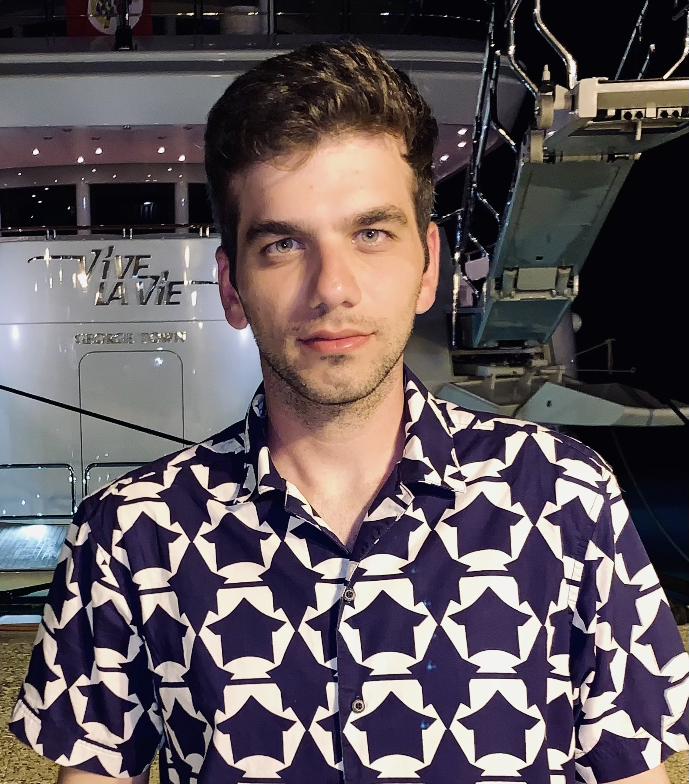

Βασίλειος - Σεραφείμ Τσιός
University of Essex (BSc Computing(Data Science))
Contact Info
- ...
- ...
Skills
Java
HTML5, CSS, JavaScript
MySql
Python, R
Oracle SQL, NoSQL
C#, C++
Βασίλειος - Σεραφείμ Τσιός
University of Essex (BSc Computing(Data Science))
Contact Info
Skills
Java
HTML5, CSS, JavaScript
MySql
Python, R
Oracle SQL, NoSQL
C#, C++
Greetings! I'm Vasilis Tsios, a dedicated student at the University of Essex, pursuing a BSc in Computing with a specialization in Data Science. My educational journey began with a background in Physics from the University of Ioannina, and I've since embarked on an exciting path towards becoming a software engineer. My early experiences in education and service have played a pivotal role in shaping my career aspirations. I spent three years as a freelance math and physics teacher, honing my communication and problem-solving skills while helping others grasp complex concepts. Additionally, I proudly served in the Hellenic Air Force for eight months as a climate analyst, where I gained invaluable experience in data analysis and attention to detail. In my current academic pursuits, I'm thrilled to be at the top of my class in the BSc Computing program, demonstrating my commitment to continuous learning and excellence in my chosen field. I hold an English B2 certificate, which reflects my proficiency in the language and enhances my ability to collaborate on an international level. My goal is to transition into the dynamic world of software engineering, where I can apply my analytical mindset and problem-solving abilities to create innovative solutions. I'm particularly excited about data-driven technologies and the potential they hold for transforming industries. Beyond my professional endeavors, I have a deep love for reading, cinema, and embarking on exciting trips. These interests not only provide balance to my life but also fuel my creativity and curiosity. I'm eager to connect with like-minded professionals, share insights, and explore opportunities for collaboration. Let's connect and discuss how we can work together to achieve our goals. Thank you for visiting my profile, and feel free to reach out if you'd like to connect or engage in meaningful discussions.
University of Essex
October 2021 - June 2024
Computing (Data Science)
ITSM
3 February 2022
13th ITSM conference
TestDome
15 April 2022
TestDome
16 April 2022
Java Algorithms
TestDome
20 April 2022
HTML/CSS
Mediterranean College
28 April 2022
Blockchain Event
Αρχές της τεχνολογίας Blockchain και ο ρόλος της σήμερα
ΓΕΝΙΚΟ ΕΠΙΤΕΛΕΙΟ ΕΘΝΙΚΗΣ ΑΜΥΝΑΣ
27 May 2022
Πανόπτης 2022
Βεβαίωση συμμετοχής στην εθνική διακλαδική άσκηση κυβερνοάμυνας "Πανόπτης 2022"
ENGLISH CERTIFICATION
21 November 2009
EDI (CEF B2)
EDI Level 1 Certificate in ESOL International JETSET Level 5
ENGLISH CERTIFICATION
11 June 2022
EF SET (C2 Proficiency)